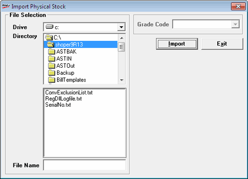

This facility is available for the Entry Types – Stock No. and Item Class.
The Import option is used when pre-recorded physical stock entries are brought into Shoper 9.
This option is used primarily when you deploy a hand-held Data Capture unit (DCU) with a bar-code scanner to take the physical stocks. The data that is recorded in the DCU is first down loaded to the computer. The down-loading process (provided by the DCU vendor) creates an ASCII flat file containing the physical stock entries.
The Import button is deactivated by default when the Manual screen or Scan screen is first opened. It gets activated only when a new batch reference number is entered.
Item details can also be imported from the text file.
Click Import to display the window as shown.

Select the drive, directory, and file name of the text file to be imported.
Any number of files can be imported, one after the other, into a single batch reference number.
Since Import option allows to record stock by reading a flat file created either by scanning the bar codes using an external scanning device or by simply entering the stock numbers using a keyboard, the stock numbers present in such files need not necessarily find a match in the Items Master maintained by Shoper 9. Hence, to make sure that all the records are considered by the Stock Taking process, a facility to display Import Log View is provided with three filters namely, Valid, Invalid, Qty not in multiples of LSQ and All. The invalid stock numbers are displayed in Red colour to easily draw the attention of the user, so that such records are rectified in the flat file and re-imported.
If there are any invalid items in the imported file, an error message “Import file contains invalid stock numbers, please view import log” is displayed and the Preview button, which by default will be in disabled state, gets enabled.
Preview option helps in identifying the invalid stock numbers in the imported file and taking corrective actions before recording the physical stock.
Click Preview to display Import Log View window. All stock numbers imported from file, whether valid or invalid, are listed. By default, the invalid items are shown in the preview.
Displays all invalid numbers in red.
The combo box List filters the list into valid items, invalid items, items whose quantity is not in multiples of LSQ or all.